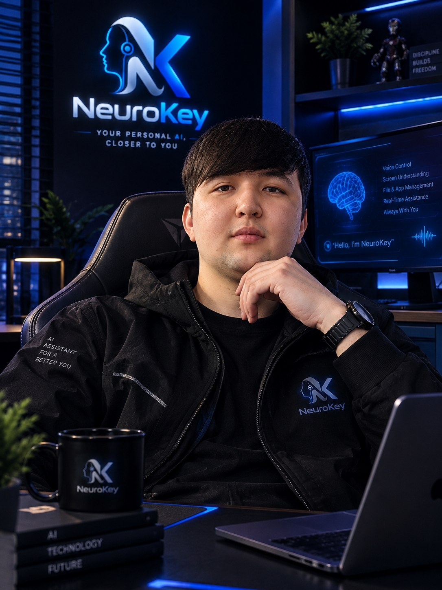
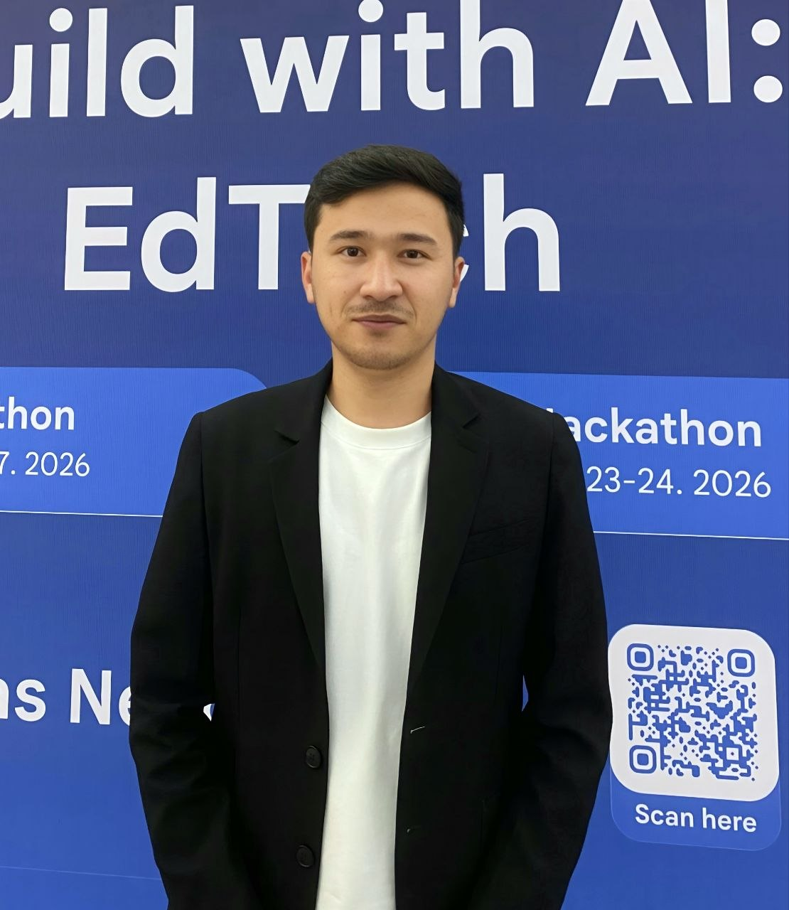

Sizning shaxsiy sun'iy intellektingiz — sizga yaqinroq
NeuroKey — eshitadi, ko'radi, eslaydi va harakat qiladi. Tabiiy ovoz orqali kompyuteringizni boshqaradi, ekrandagi kontekstni ko'radi, doimiy kognitiv xotiraga ega va faqat SIZ uchun ishlaydi.
Jamoa: Asoschilar, Rollar va Texnologik Ko'nikmalar
NeuroKey jamoasi — tizimni noldan ishlab chiqqan va kognitiv arxitekturani amalda sinab ko'rgan iqtidorli muhandislardan iborat.

Diyorbek Sobirjonov
Founder & CEO · Founders Hub RezidentiLoyiha asoschisi va boshqaruvchisi. Founders Hub rezidenti va FoundersCamp bitiruvchisi. NeuroKey tizimining g'oyasi, kognitiv arxitekturasi va telefon ko'prigi muallifi.

Elbek Azimjonov
Co-founder · 5+ yillik muhandislik tajribasiDasturiy injiniringda 5+ yillik tajriba. Mahsulot arxitekturasi, biznes integratsiyalar, B2B pilot sinovlari va Go-To-Market strategiyasi bo'yicha mas'ul.
Ikki asoschi va o'sishga qarab kengayish
Hozir: 2 asoschi + 1 dasturchi (maosh hisobi: 3 kishi, oyiga $1,456). Daromad o'sgach: +1 dasturchi. Keyin: support va marketing.
Loyiha Tafsilotlari va AI Yordamchi
Asosiy sahifani uzoq skroll qilish shart emas! Quyidagi 8 ta mavzudan birini bosing — to'liq slayd ochiladi va AI chatbot bevosita savollaringizga javob beradi:
NeuroKey Demo (Rus tilida, inglizcha subtitrlar bilan)
NeuroKey ovozli muloqot, ekran ko'rishi, 16 000+ kognitiv xotira tugunlari va kompyuterni avtonom boshqarishi real vaqtda. Quyidagi videoni to'g'ridan-to'g'ri saytda tomosha qilishingiz mumkin:
Jamoa Izohi & MVP Yangilanishi:
Bu demo-video yozilganiga 1 oydan oshdi. Hozirda ba'zi bir texnik muammolar sabab yangi demo-video olishga ulgurmadik, jamoamiz bilan ayni paytda shu muammolarni tuzatish, telefon orqali kompyuterni boshqarish va to'liq lokalda ishlash bo'yicha yangilanishlar bilan bandmiz. O'ylaymizki, kelasi bosqichlarda to'liq (polnotsenniy) MVP'ni ko'rsatishga bor kuchimiz bilan harakat qilamiz.
⚡
Dasturchilar & B2B Uchun: REST & WebSocket API
NeuroKey kognitiv qatlamlarini o'z loyihangizga ulash kod namunalari (bosing va ko'ring)
Ochish / Yopish ▾
import neurokey
client = neurokey.Client(api_key="nk_live_2026_preseed_test_token")
# Kompyuterni avtonom boshqarish va fayllar bilan ishlash
result = client.agent.execute(
command="Bugungi hisobotni och va PDF qilib Telegramga yubor",
screen_vision=True,
local_enclave=True
)
print(f"Status: {result.status} | Kechikish: {result.latency_ms}ms")
# >>> Status: completed | Kechikish: 780ms